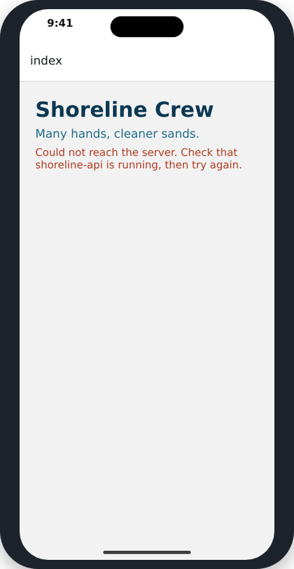

React Native & Expo · Part 1 · Session 2 of 26 · 3 hours
Session 2
From the HQ to the Phone
Copy what is about the data, rewrite what is about the browser, and make the first real request.
Today
Three hours, one lesson
| 0:00 | Warm-up: Your Toolchain |
| 0:10 | Copy or rewrite? |
| 0:25 | Copy, check, adapt, then lab Task 1 |
| 1:05 | Break (10 min) |
| 1:15 | The API address, then lab Tasks 2 and 3 |
| 1:45 | Project: the first real request (Steps 1 to 5) |
| 2:50 | Exit ticket, homework, what to bring next time |
LABS Lab files are in
labs/module-02. Work in starter/, never the solution.Warm-up · 10 minutes
Your Toolchain
- Metro runs your app. Which two commands check it?
- On a phone, where does
http://localhost:4000go? - Your two terminals: where, and what runs in each?
CHECK Then: the API, npx expo start, w. Shoreline Crew and the tagline?
1.3
From the HQ to the Phone
Two apps, one crew, one API.
1.3 · From the HQ to the Phone · The rule
Copy or rewrite?
- Code that only works with data: copy
- Code that touches the browser: rewrite
- Not everything from scratch, not the whole src/ either
- Real teams move the data code, rewrite the platform code
MODEL Same tide chart, a different boat: is it a tide chart or part of the building?
1.3 · From the HQ to the Phone · The table
What carries over
| Copied | src/api/types.ts |
| Copied | Type guards, ApiError, describeError |
| Copied | formatDate, getAvailability |
| Same | The fetch calls |
| Rewritten | The session in sessionStorage |
| Rewritten | Components and CSS Modules |
1.3 · From the HQ to the Phone · On a phone
Does tsc warn you?
document,window.location,sessionStorage: noimport.meta.env.VITE_…: yes, TS2339- A missing
../utils/debris.ts: yes, TS2307 - A failed fetch, TypeError vs Expo's error: no
WATCH A clean type check and a working web preview do not prove it runs on a phone.
1.3 · From the HQ to the Phone · Live demo
The HQ's client, type-checked
npx tsc --noEmit
src/api/client.ts:3:34 - error TS2307: Cannot find module '../utils/debris.ts' or its corresponding type declarations. src/api/client.ts:172:28 - error TS7006: Parameter 'category' implicitly has an 'any' type. src/api/client.ts:194:53 - error TS7006: Parameter 'category' implicitly has an 'any' type. src/api/client.ts:337:19 - error TS2339: Property 'env' does not exist on type 'ImportMeta'. src/api/client.ts:340:27 - error TS2339: Property 'env' does not exist on type 'ImportMeta'. Found 5 errors in the same file, starting at: src/api/client.ts:3
WHY Five honest findings. Now: what is NOT on the list?
1.3 · From the HQ to the Phone · Live demo
What tsc did not report
grep -n -E 'sessionStorage|window\.' src/api/client.ts
288:// sessionStorage: kept when the page reloads, gone when the tab closes, never shared with other tabs 291:// What sessionStorage holds, checked: null when nothing (or not a session) is saved 293: const saved = sessionStorage.getItem(sessionKey) 315: sessionStorage.removeItem(sessionKey) 317: sessionStorage.setItem(sessionKey, JSON.stringify(session)) 338: return window.location.origin
WATCH Every line type-checks. On a phone each one fails while the app runs.
1.3 · From the HQ to the Phone · Why
Expo loads the browser's types
npx tsc --showConfig | grep -A 4 '"lib"'
"lib": [
"dom",
"esnext"
],
"module": "preserve",
WHY DOM is there for the web preview. Search copied code for window, document, Storage, import.meta.
1.3 · From the HQ to the Phone · The contract
types.ts: copied, never edited
npx expo lint
src/api/types.ts 160:12 warning Array type using 'Array<T>' is forbidden. Use 'T[]' instead @typescript-eslint/array-type 161:11 warning Array type using 'Array<T>' is forbidden. Use 'T[]' instead @typescript-eslint/array-type 178:11 warning Array type using 'Array<T>' is forbidden. Use 'T[]' instead @typescript-eslint/array-type 179:21 warning Array type using 'Array<T>' is forbidden. Use 'T[]' instead @typescript-eslint/array-type ✖ 4 problems (0 errors, 4 warnings) 0 errors and 4 warnings potentially fixable with the `--fix` option.
WHY Not --fix: ignore the file in eslint.config.js.
1.3 · From the HQ to the Phone · The ignore
eslint.config.js
shoreline-crew/eslint.config.js
// https://docs.expo.dev/guides/using-eslint/ const { defineConfig } = require('eslint/config'); const expoConfig = require('eslint-config-expo/flat'); module.exports = defineConfig([ expoConfig, { // dist: export output; src/api/types.ts: a copy of the API's contract, never edited ignores: ['dist/*', 'src/api/types.ts'], }, ]);
WHY Lint then prints only Expo's two env: lines.
1.3 · From the HQ to the Phone · Version note
TypeScript 6.0 here, 7.0 in the HQ
- SDK 58 pins
typescript ~6.0.3 - Same defaults, same error codes; 7.0 is faster
- With 7.0:
npx expo lintcrashes, install --check complains - Undo:
npx expo install --dev typescript
TRAP Without --dev: a second typescript entry under dependencies.
1.3 · From the HQ to the Phone · Guided lab · 20 minutes
Task 1: what tsc cannot see
labs/module-02/l1_3-from-the-hq-to-the-phone/starternpm test: three failures ·npm run typecheck: nothing- Search first, then rewrite two helpers
- Leave
spotsTextas it was copied
LAB MSW answers with the API's real answers: no API, no phone.
10
Break
Back at 1:15: the API address.
1.3 · From the HQ to the Phone · Same fetch, different failures
The phone's fetch is Expo's
- Browser, no answer: TypeError "Failed to fetch"
- Phone (SDK 58): Expo's
FetchError, "fetch failed: …" - The HQ's
instanceof TypeErrornever matches it - So
request()wraps any failed fetch in aNetworkError
1.3 · From the HQ to the Phone · The client
request(): the one place requests go
shoreline-crew/src/api/client.ts
async function request(path: string, init: RequestInit = {}): Promise<Response> { const url = `${apiBaseUrl()}/api${path}`; let response: Response; try { response = await fetch(url, init); } catch (error) { // In the browser a failed fetch is a TypeError; on a phone, Expo's fetch throws its own error throw new NetworkError(error);
WHY The URL first: a missing variable stays a plain Error, not a network problem.
1.3 · From the HQ to the Phone · Env vars
VITE_ becomes EXPO_PUBLIC_
import.meta.env.VITE_API_URL- the HQ: a typo was a type error
- .env.local, not in Git
process.env.EXPO_PUBLIC_API_URL- any name: string | undefined
- .env.example documents it
RULE Both: copied into the bundle when it is built.
1.3 · From the HQ to the Phone · Live demo
Metro found it
npx expo start
env: load .env.local env: export EXPO_PUBLIC_API_URL Starting project at <folder> Using src/app as the root directory for Expo Router. React Compiler enabled Starting Metro Bundler › Scan the QR code above to open in Expo Go.
WHY The first two lines say .env.local was read. QR code left out.
1.3 · From the HQ to the Phone · Live demo
The address is inside the app
npx expo export --platform web --output-dir dist cat dist/client/_expo/static/js/web/*.js | grep -o 'http://localhost:4000' | head -n 1
http://localhost:4000
WHY Change .env.local: restart with --clear. And nothing in it is secret.
1.3 · From the HQ to the Phone · Live demo
Destructuring: tsc silent, lint is not
const { EXPO_PUBLIC_API_URL: url } = process.env;
# npx expo lint
133:9 error Unexpected destructuring. Cannot destructure url from process.env expo/no-env-var-destructuring
LESSON FIX The lesson says it lints cleanly. It does not: write the full name, with a dot.
1.3 · From the HQ to the Phone · Three rules
EXPO_PUBLIC_, by heart
- Changed
.env.local?npx expo start --clear - Write
process.env.EXPO_PUBLIC_API_URLin full - Nothing secret: anyone can unpack an app
PHONE Today the address is localhost:4000, for the web preview. Phones: Lesson 5.1.
1.3 · From the HQ to the Phone · Guided lab · 15 minutes
Tasks 2 and 3
- Task 2: a
NetworkErrorfor the phone's FetchError - Task 3:
npm run lintnames the destructuring - Done:
Tests: 8 passed, 8 total - typecheck and lint print nothing; the search finds nothing
1.3 · From the HQ to the Phone · Folders
Where shared code lives
src/app/: screens and layouts onlysrc/api/:types.ts(copied),client.ts(adapted)src/utils/:format.ts,availability.ts(copied)@/api/clientfrom any folder, no.tsextension
1.3 · From the HQ to the Phone · Project
The First Real Request: in the room
types.tscopied, ignored by ESLint (10 min)format.ts,availability.ts(10 min)- The phone's
client.ts: read it, check, search (15 min) .env.example→.env.local(10 min)index.tsx: the list,npx expo start --clear(20 min)
PROJECT Step 6 (break it on purpose, checks, commit) at home.
1.3 · From the HQ to the Phone · Project
The first real request

1.3 · From the HQ to the Phone · Project
No answer from the API

1.3 · From the HQ to the Phone · Before any task is done
Lint and type check
npx expo lint npx tsc --noEmit
- Lint prints only Expo's two
env:lines - tsc prints nothing
- Then the search, then the commit
WATCH Quiet checks are not proof for browser APIs: search.
Wrap-up · 4 minutes
Exit ticket
- Your one-sentence rule for copy or rewrite, one example each
- A browser API tsc accepts here, and how you find it instead
- Changed
.env.localwhile Metro ran: what now, and why?
WHY No notes. Workbook Exit Ticket box or a sticky note.
Before Session 3
Homework and bring list
- Project Step 6, For your own app
- Exercises 1 to 3, the Quick Quiz, the journal (your rule)
- Lab 1.3: the tasks not finished
- Bring: the committed first request, your phone, the workbook
NEXT Session 3: View, Text and StyleSheet.